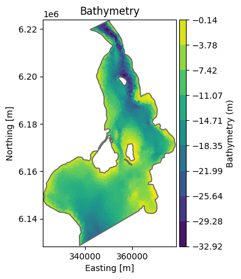
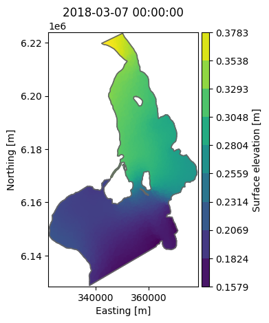

Dfsu 2D#
2D horizontal.
See Dfsu in MIKE IO Documentation
import numpy as np
import pandas as pd
import mikeio
Basic properties#
Note
Example data can be found in the mini_book/data folder in this zip-file.
fn = "data/oresundHD_run1.dfsu"
dfs = mikeio.open(fn)
dfs
Dfsu2D
number of elements: 3612
number of nodes: 2046
projection: UTM-33
items:
0: Surface elevation <Surface Elevation> (meter)
1: Total water depth <Water Depth> (meter)
2: U velocity <u velocity component> (meter per sec)
3: V velocity <v velocity component> (meter per sec)
time: 5 steps with dt=86400.0s
2018-03-07 00:00:00 -- 2018-03-11 00:00:00
dfs.geometry
Flexible Mesh Geometry: Dfsu2D
number of nodes: 2046
number of elements: 3612
projection: UTM-33
dfs.geometry.plot();

dfs.n_items
4
dfs.projection_string
'UTM-33'
dfs.timestep # in seconds ...
86400.0
ds = dfs.read(items="Surface elevation")
ds.shape
(5, 3612)
da = ds["Surface elevation"] # =ds[0] = ds.Surface_elevation
da
<mikeio.DataArray>
name: Surface elevation
dims: (time:5, element:3612)
time: 2018-03-07 00:00:00 - 2018-03-11 00:00:00 (5 records)
geometry: Dfsu2D (3612 elements, 2046 nodes)
da.plot();

Subset data#
ze = dfs.element_coordinates[:,2] # third column is depth
ze<-20
array([False, False, False, ..., False, False, False])
elems = np.where(ze<-20)[0]
ds_sub = dfs.read(items=0, time=-1, elements=elems) # read only data where depth is more than 20m
ds_sub
<mikeio.Dataset>
dims: (element:202)
time: 2018-03-11 00:00:00 (time-invariant)
geometry: Dfsu2D (202 elements, 166 nodes)
items:
0: Surface elevation <Surface Elevation> (meter)
ax = ds_sub[0].plot()
dfs.geometry.plot.mesh(ax=ax);

Create new dfsu from mesh#
fn = "data/two_elements.mesh"
dfs = mikeio.open(fn)
data = 36.5 * np.ones(dfs.n_elements) # set all elements to 36.5
time = pd.date_range("2020-1-1", periods=1) # arbitrary date
item = mikeio.ItemInfo(mikeio.EUMType.Chezy_No)
da = mikeio.DataArray(data, time=time, item=item, geometry=dfs.geometry)
da.to_dfs("chezy_map.dfsu")
dfs = mikeio.open("chezy_map.dfsu")
dfs.read()[0][0,:]
<mikeio.DataArray>
name: Chezy No
dims: (element:2)
time: 2020-01-01 00:00:00 (time-invariant)
geometry: Dfsu2D (2 elements, 4 nodes)
values: [36.5, 36.5]
More examples#
See the MIKE IO example notebooks which has “dfsu” in the name.